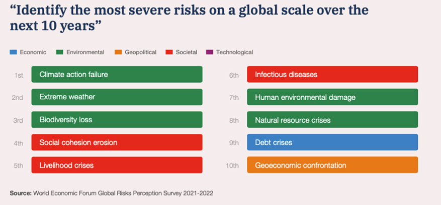
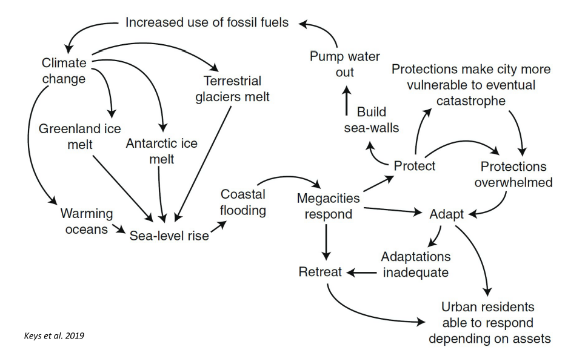
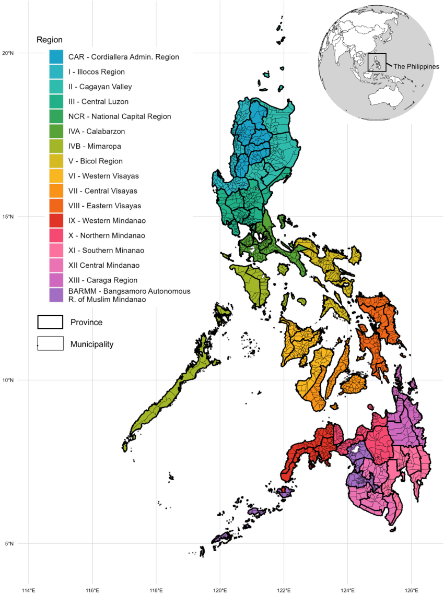
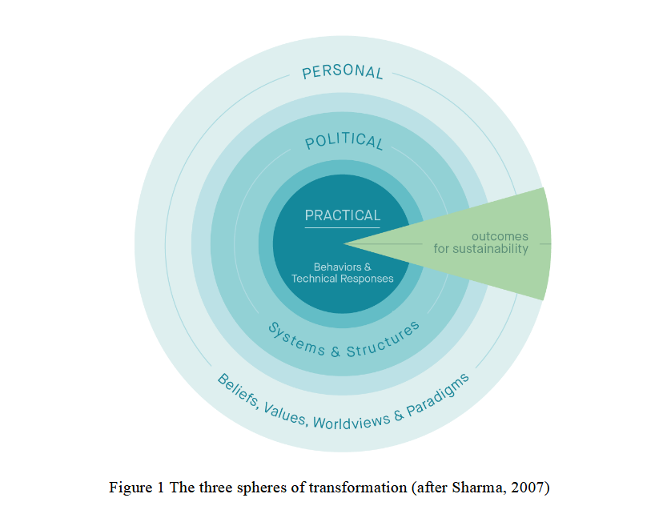

9 Introduction aux risques et catastrophes à l’ère de l’Anthropocène
Ce module est intégré dans le bloc 1 : enseignement pluridisciplinaire relatif aux risques et catastrophes à l’ère de l’Anthropocène. Repartir en deux partim, il a une durée de 36 h et compte pour 3 crédits :
- Partim 1 : une approche systémique (24h Th) : enseignant Nicolas DENDONCKER et Pierre OZER.
- Partim 2 : introduction aux notions de base (12h Th).
9.1 Partim 1 : Une approche systémique
Ce cours pose les bases de toute la formation, en combinant théorie, études de cas, séminaires invités et retours d’expérience. Il vise une capacité d’analyse systémique et critique des interactions entre facteurs environnementaux, sociaux et économiques, dans des contextes marqués par les inégalités.
L’approche est interdisciplinaire et multiscalaire : comprendre comment les transformations environnementales (pollution, changement climatique, dégradation des écosystèmes) frappent différemment les populations selon leur position sociale, leur lieu de vie et leur vulnérabilité.
9.1.1 Objectifs du module
À l’issue du cours, l’étudiant devrait être capable de :
- mobiliser les concepts clés (vulnérabilité, adaptation, résilience, justice environnementale, pollution) et les cadres théoriques de l’environnement, des sciences sociales et de la géographie ;
- analyser de façon systémique et multiscalaire les facteurs de risque (locaux, globaux, structurels) et les inégalités d’exposition et d’accès aux ressources ;
- évaluer de manière critique les réponses des acteurs (États, collectivités, ONG, communautés) et les cadres de gouvernance, en interrogeant les rapports de pouvoir ;
- formuler des recommandations ancrées dans la complexité des territoires, et garder une posture réflexive sur son propre rôle.
9.1.2 Notes de cours
Le cours a débuté le mardi 16 septembre 2025 avec Pierre Ozer, par une note d’information.
Informations pratiques
- 13 novembre : visite de terrain, vallée de la Vesdre (inondations de 2021).
- Semaine suivante : sortie sur un cas de pollution diffuse.
- 25 septembre à 17h30 : conférence à Liège, « Effets des pesticides dans l’eau sur la santé », avec Laurence Huc (INRAE), Stéphane (Le Monde) et Gautier (ULiège).
Notre planète a des ressources finies et une capacité de résilience limitée. Plusieurs tendances lourdes vont pourtant en sens inverse :
- une urbanisation rapide, surtout dans le Sud global et sur les littoraux, qui concentrent déjà plus de la moitié de la population et voient leur vulnérabilité grimper ;
- une demande d’énergie en hausse continue depuis 1945 ; les renouvelables progressent, mais ne suffisent pas encore à faire reculer les fossiles (BP Energy Outlook, 2019) ;
- une élévation du niveau de la mer.
Les besoins alimentaires et les pressions écologiques atteignent des niveaux sans précédent :
- expansion céréalière en hausse en Afrique et en Asie, en baisse en Europe (compensée par les rendements et les importations) ;
- élevage en hausse (ovins, caprins, bovins) ;
- des monocultures qui ne compensent pas la déforestation ;
- un transfert des impacts du Nord vers le Sud ;
- une forte érosion de la biodiversité.
S’y ajoute un changement climatique très inégalement réparti :
- une vitesse de changement qui rend l’adaptation difficile ;
- des inégalités béantes : le 1 % le plus riche émet plus que les 50 % les plus pauvres.
S’y ajoute enfin une incitation permanente à consommer, portée par les firmes et une publicité parfois mensongère. L’enseigne Aldi en donne un exemple avec son « la vie plus chère, des prix réduits » : on encourage la surconsommation, et avec elle les pressions environnementales.
9.1.2.1 Étude de cas : le système alimentaire belge (Carrefour)
9.1.2.1.1 Acte 1 (2006)
Pour vendre à bas prix, les firmes mettent en place des chaînes de production qui dégradent l’environnement et fragilisent davantage des pays déjà vulnérables. Quelques exemples relevés :
- un dessert mêlant fruits et crevettes : les crevettes, pêchées dans des mers proches, sont expédiées en Asie du Sud-Est pour être décortiquées, puis réimportées. Le seul transport pèse lourd en émissions ;
- la modification de l’usage des sols, notamment la destruction de mangroves en Amérique du Sud, pour répondre aux besoins alimentaires du Nord ;
- la viande des plats préparés, le plus souvent importée d’autres continents.
Les prix bas en Europe se paient donc par une dégradation accrue des zones du Sud, souvent les plus vulnérables.
9.1.2.1.2 Acte 2 (2015)
Des campagnes vantent le « consommer local », alors que beaucoup de produits sont fabriqués loin du lieu de vente, sans que l’emballage le mentionne. En février 2015, la communication « consommer belge » relève surtout du marketing. Comme d’autres enseignes, Carrefour dispose d’un fort pouvoir de lobbying, illustré par le « partenariat » qu’elle affiche dans le cadre d’une COP, manière de soigner son image sur la réduction des gaz à effet de serre.
9.1.2.1.3 Actes 3 à 6 (2021-2025)
Même mise en avant du local, même dépendance aux importations. Beaucoup de drapeaux belges sur les emballages, pour des provenances parfois lointaines. En mars 2021, le slogan « privilégier l’origine belge » ne se vérifie pas dans les faits sur une large part des produits. Les pratiques varient d’ailleurs selon les filiales, de la Belgique à l’Italie en passant par la France.
Les échanges ont ensuite porté sur les caractéristiques du système agro-industriel : intensif, spécialisé, concentré, mondialisé, financiarisé.
Le résultat est un dépassement successif et inquiétant des limites planétaires (Rockström et al.) : trois franchies en 2009 (climat, biodiversité, cycles de l’azote et du phosphore), une quatrième en 2015 (écosystèmes terrestres), une sixième en 2023 avec le franchissement de la limite de l’eau douce.
Une piste pour améliorer la chaîne de valeur serait d’en inverser le schéma. Aujourd’hui, l’agriculteur gagne moins que les autres maillons. La France expérimente des politiques de reconstruction du prix « à l’envers » :
- schéma actuel : distributeur → transformateur → agriculteur ;
- proposition : placer les regroupements d’agriculteurs en première ligne.
La crise alimentaire actuelle tient en trois traits : une consommation impulsive, la peur de la surconsommation, et la dissonance cognitive née de la tension entre les deux.
Un autre levier est la communication préventive. Le marketing agroalimentaire pèse environ 1000 fois plus que la prévention. Mettre en avant les produits à Nutri-Score favorable irait dans le bon sens.
Le cours relie ainsi urbanisation, consommation, système alimentaire et risques sanitaires environnementaux. Les dynamiques globales (climat, énergie, biodiversité) sont aggravées par les inégalités sociales et le poids du marketing.
La journée s’est prolongée en soirée par la projection d’un documentaire et des échanges entre étudiants, organisés par l’ONG Eclosio, liée à l’Université de Liège. Eclosio défend le droit des générations actuelles et futures à une vie digne, en harmonie avec leur environnement, autour de trois axes : promouvoir la transition agroécologique ; favoriser l’insertion socioéconomique des populations fragilisées par l’exclusion et les inégalités ; encourager l’engagement citoyen face aux défis sociétaux et climatiques.
L’animation était assurée par deux de ses membres, Claire et Émilie. Le tour de table invitait chacun à se présenter à travers son plat préféré. A suivi la projection du documentaire « L’Empire de l’or rouge » (ONG Humundi, ex-SOS Faim Belgique), qui retrace l’épopée mondiale de la tomate, révélatrice d’enjeux économiques et géopolitiques.
Plusieurs points sont ressortis : la Chine s’est imposée comme une superpuissance du secteur et cherche désormais à exporter pour prolonger son avance ; le marché reste dominé par les États-Unis, l’Italie et la Chine. La consommation en est le moteur. L’Afrique de l’Ouest, enfin, est la région où la croissance démographique est la plus forte et la plus concentrée. La séance s’est close sur des jeux de débat autour des enjeux alimentaires mondiaux.
Le cours s’est poursuivi le 18 septembre 2025. Pierre Ozer y a illustré les crises de l’Anthropocène par une série de cas concrets, en majorité africains. J’en retiens l’essentiel ci-dessous (les supports détaillés sont archivés dans mon dossier de cours).
9.1.2.2 Djibouti : sécheresse, migration et risque urbain
Djibouti cumule une position géostratégique de premier plan (détroit de Bab-el-Mandeb, par où transite près de 30 % du trafic maritime mondial ; bases militaires étrangères ; port de transit dont dépend l’Éthiopie) et une forte exposition climatique. Entre 2007 et 2011, la ville a enregistré un déficit de 73 % des précipitations annuelles par rapport à la moyenne 1981-2010 (De Gracia & Ozer, ORBi). Cette sécheresse a poussé des familles rurales de Djibouti, d’Éthiopie et de Somalie vers la capitale. Les derniers arrivés se sont installés dans des quartiers neufs comme Buldhuqo, au fond d’un oued déjà inondé en 2004 et 2009. La prochaine pluie intense y exposera au maximum des populations précaires : le risque hydrologique est fabriqué par l’installation elle-même. L’imagerie satellitaire diachronique confirme la perte de plans d’eau et l’avancée urbaine sur ces zones.
9.1.2.3 Nouakchott (Mauritanie, 2014) : de la sécheresse à la crise urbaine
La Mauritanie, pays sahélien, est structurellement vulnérable aux chocs climatiques. En 2014, une succession de mauvaises pluviométries a détruit récoltes et pâturages. Pour les agro-pasteurs, cela se traduit par une perte de revenus, des greniers vides et une décapitalisation, le bétail étant vendu à bas prix faute d’eau et de fourrage. Le déplacement s’est dirigé vers Nouakchott, perçue comme le seul lieu d’aide et d’opportunités malgré sa propre pauvreté. L’afflux a nourri la crise du logement (bidonvilles), saturé les services et repoussé les nouveaux arrivants vers les zones les plus exposées, souvent inondables. La règle se vérifie une fois de plus : plus un système est vulnérable, plus une perturbation, même modeste, le déstabilise.
9.1.2.4 Quand la carte de risque reste lettre morte
Plusieurs cas suivent le même scénario, presque un archétype de la catastrophe évitable. Une carte d’aléa inondation est produite (2006), des lotissements sont ensuite autorisés dans les zones identifiées comme inondables (2012), puis la crue prévisible survient. Les ressorts sont connus : pression foncière, spéculation (un terrain inondable vaut moins cher), clientélisme, déni du risque (« une crue centennale, on a le temps »). Le SIG rend la faute visible : superposer la carte d’aléa, le cadastre des lotissements postérieurs et les images des inondations suffit à montrer qu’on a construit là où l’eau devait passer. Une carte de risque ne vaut rien sans la volonté politique de l’appliquer dans l’aménagement.
9.1.2.5 Érosion côtière de Cotonou (Bénin)
Le littoral béninois recule de 1 à 1,5 m par an en moyenne, jusqu’à 10 à 30 m/an aux points critiques comme l’embouchure de la lagune de Cotonou (programme WACA). La cause est anthropique et transfrontalière. Les barrages d’Akosombo (Ghana, 1965, à l’origine du lac Volta) et de Nangbéto (Togo/Bénin, 1987) piègent les sédiments qui alimentaient les plages par la dérive littorale est-ouest ; privée d’apport, cette dérive devient érosive. Les jetées des ports de Lomé et de Cotonou aggravent le phénomène localement : le sable s’accumule à l’est, l’érosion s’accélère à l’ouest. Le basculement se situe autour de 1965 et se lit dans la photo-interprétation diachronique, avec une réduction des apports estimée à plus de 70 %. Les réponses (enrochements, épis, rechargement de plage, coopération régionale WACA financée par la Banque mondiale) restent coûteuses et aux résultats inégaux. C’est un cas d’impact indirect et partagé entre pays : gérer ce littoral suppose de raisonner à l’échelle des bassins versants régionaux. Sources : Kaki et al. (2021) ; Laïbi et al. (2014) ; programme WACA.
9.1.2.6 Populations piégées et observatoire du littoral
Ces situations donnent à voir des « populations piégées » : un nomadisme forcé, des installations provisoires répétées, et des habitants qui restent malgré tout, faute de mieux, jusqu’à ce que la montée des eaux les rattrape. Un observatoire du littoral suit ces dynamiques sur l’ensemble de l’Afrique de l’Ouest, de la Mauritanie au Nigéria. Tous ces cas relèvent de la même logique systémique : un choc climatique (sécheresse) provoque une crise économique (pertes de récoltes), qui déclenche une crise sociale (migration forcée), qui débouche sur une crise urbaine et humanitaire. Et ceux qui en subissent le plus les effets, les agro-pasteurs sahéliens, sont ceux qui ont le moins contribué au dérèglement.
9.1.2.7 Le débat sur les « réfugiés climatiques »
Le terme environmental refugee a été popularisé par un rapport du PNUE en 1985 (El-Hinnawi). L’Australie et la Nouvelle-Zélande se sont retrouvées en première ligne dans les années 2000, avec les demandes d’asile d’habitants de Tuvalu et de Papouasie-Nouvelle-Guinée fuyant la montée des eaux, demandes rejetées par les tribunaux. Les États-Unis et plusieurs pays occidentaux refusent le statut juridique de « réfugié climatique » : la Convention de Genève (1951) ne couvre que les persécutions (race, religion, nationalité, groupe social, opinions politiques), pas l’environnement, et l’élargir créerait une obligation d’accueil. Le HCR et l’OIM évitent désormais le terme, jugé inexact, la migration climatique étant le plus souvent interne et rarement mono-causale ; ils lui préfèrent « migrant environnemental » ou « personne déplacée dans le contexte de catastrophes ». L’Initiative Nansen (2012-2015) structure le travail actuel en contournant le mot « réfugié ».
9.2 Partim 2 : Introduction aux notions de base
Ce partim aborde l’effondrement de la biodiversité en quatre temps : la biodiversité elle-même, notre rapport à la nature, le cadre institutionnel, et la recherche d’un autre rapport au monde.
9.2.1 La biodiversité
L’exemple des alouettes, en France, est parlant : ces oiseaux de 20 à 50 g ne sont pas chassés pour être mangés, et leur déclin tient un peu à la chasse, mais surtout à l’agriculture. La biodiversité est aujourd’hui la limite planétaire la plus dégradée. L’influence humaine y est déterminante, au point qu’on parle d’une sixième extinction de masse : on estime que 20 à 30 % des espèces pourraient avoir disparu d’ici 2050.
Le terme « biodiversité » existe depuis 1986. On la décline sur trois niveaux : la diversité des espèces dans un milieu, la diversité des écosystèmes et la diversité génétique (ADN). On distingue aussi la biodiversité ordinaire de la biodiversité extraordinaire. Fait notable, les lieux de forte diversité biologique coïncident souvent avec une forte diversité culturelle : il existe un parallèle entre les deux. La biodiversité fonctionnelle, enfin, mesure les aspects du vivant qui influent sur l’assemblage et le fonctionnement des écosystèmes.
Selon le WWF, la taille moyenne des populations de vertébrés a chuté de 68 % entre 1970 et 2020, les espèces marines étant les plus touchées. Les mammifères sauvages ne représentent plus que 4 % de la biomasse des mammifères, loin derrière les humains et le bétail. Les grands moteurs de cet effondrement sont la déforestation et l’agriculture intensive, de loin la première cause ; le changement climatique y contribue, mais moins que ces pressions directes.
9.2.2 Pourquoi conserver la biodiversité
Deux familles d’arguments coexistent. Les uns sont altruistes, d’ordre moral. Les autres sont utilitaristes et reposent sur les services écosystémiques (SE). C’est l’argument utilitariste qui domine, sans pour autant s’opposer au premier. La notion même de service écosystémique fait débat : elle sous-entend que les écosystèmes seraient à notre service. Le concept date des années 1970, antérieur au mot « biodiversité ». Le Costa Rica a bâti une politique de conservation sur cette base, et la Wallonie y recourt aussi. La marchandisation de la nature qu’elle peut induire reste problématique. Quant à la compensation écologique, censée réparer les atteintes, la Belgique n’a pas de loi en la matière.
9.2.3 Rapport à la nature et cadre institutionnel
Les premiers parcs nationaux sont nés aux États-Unis. Plus récemment, la COP15 de 2022, à Montréal (Canada), a fixé un objectif fort : 30 % d’aires protégées d’ici 2030.
Sur le plan institutionnel, l’IPBES est l’équivalent du GIEC pour la biodiversité. Ses rapports ne sont pas de simples initiatives de scientifiques : ils sont normatifs par construction, sans objectif scientifique propre, mais avec une visée de synthèse. Évaluer, après tout, c’est attribuer de l’importance à quelque chose. Le débat oppose une vision anthropocentrique, faite de dominance et de propriété, à une vision écocentrique, dans un esprit de pluralité épistémologique. Le regard de l’IPBES sur les relations « humains-nature » pose une question de fond : pourquoi la nature est-elle reléguée au second plan, et pourquoi maintenir cette séparation entre l’homme et la nature ?
9.3 Les risques à l’ère de l’anthropocène : de la résilience à la transformation
9.3.1 Risques à l’ère de l’anthropocène
9.3.1.1 Notion traditionnelle du risque et ses limites
Traditionnellement, le risque est défini comme la combinaison d’un aléa (danger potentiel), de l’exposition d’enjeux humains à cet aléa, et de leur vulnérabilité face à celui-ci. En d’autres termes, un évènement dangereux (inondation, séisme, etc.) n’engendre un risque que s’il menace des populations ou des biens vulnérables. Cette conception tripartite (danger × exposition × vulnérabilité) est la base des cadres d’analyse des risques, notamment en climatologie (Pörtner et al. 2022). Ses limites apparaissent toutefois dans le contexte moderne : elle peine à appréhender la complexité systémique des risques contemporains. En effet, la société actuelle, de plus en plus préoccupée par l’avenir, génère de nouveaux risques issus de ses propres activités. Les problèmes environnementaux sont indissociables des problèmes sociaux - « la nature est la société et la société est la nature » selon Beck (1999) – si bien que de nombreux dangers dits “naturels” sont exacerbés par l’action humaine.
Les approches centrées sur un aléa isolé et des probabilités statistiques s’avèrent insuffisantes pour saisir des risques en cascade, interconnectés et incertains. Par exemple, se focaliser sur les causes immédiates d’un sinistre (ex. un bâtiment mal construit face à un séisme) conduit à des solutions purement techniques, alors que les causes plus profondes (ex. la pauvreté, l’urbanisation anarchique) restent intouchées (O’Brien et Sygna 2013). Une telle approche “classique” de la résilience, qui vise à restaurer l’état initial après une crise, peut s’avérer inadéquate si cet état initial est lui-même vulnérable ou insoutenable à long terme. D’où la nécessité de repenser le risque dans un cadre plus large, propre à l’Anthropocène.
9.3.1.2 Typologie des risques émergents et climatiques
À l’ère de l’Anthropocène, les risques se multiplient et se transforment. Les classements globaux distinguent généralement plusieurs catégories de risques majeurs – économiques, environnementaux, technologiques, sociaux et politiques – dont les occurrences et impacts potentiels évoluent chaque année (« The Global Risks Report 2022 (17th Edition) » 2022).

Parmi ces menaces émergentes, les risques climatiques occupent une place centrale. Le changement climatique intensifie des aléas naturels existants (températures extrêmes, sécheresses, cyclones …) et en crée de nouvelles combinaisons. Par exemple, on observe déjà une augmentation des évènements météorologiques extrêmes et systémiques : inondations plus fréquentes, sécheresses aggravées, érosion accélérée des littoraux, méga-feux de forêt, etc … Ces aléas climatiques en série mettent en lumière les interconnexions entre risques : une sécheresse prolongée peut déclencher des crises agricoles, économiques puis politiques en chaîne ; de même, une tempête extrême peut causer des défaillances d’infrastructures qui se répercutent bien au-delà de la zone impactée. Ainsi, les risques climatiques illustrent parfaitement la nature systémique des risques de l’Anthropocène, où un même évènement a des répercussions multi-sectorielles et transfrontalières.
9.3.1.3 Complexité multiscalaire des risques anthropiques
On assiste à une transition depuis les risques “naturels” traditionnels vers des risques anthropiques d’une complexité inédite. Dans un monde globalisé, les actions humaines modifient l’environnement planétaire à grande échelle, ce qui brouille la frontière entre aléas naturels et provoqués. Les risques en résultant dépassent souvent le cadre local ou même national. Ils opèrent sur plusieurs échelles spatiales et temporelles à la fois : locale (ex. la vulnérabilité d’une communauté), régionale (effets en cascade sur un pays voisin) et mondiale (impact sur des systèmes globaux comme le climat, la santé ou les marchés économiques). De plus, ces risques présentent des boucles de rétroaction : par exemple, la déforestation locale contribue au changement climatique global, qui en retour accroît le risque d’incendies ou d’inondations locales. Ce maillage serré des causes et conséquences complexifie la prévision et la gouvernance des risques.
9.3.1.4 Caractéristiques des risques « anthropocènes »
Des chercheurs proposent le concept de “risque anthropocène” pour désigner ces nouveaux risques propres à l’époque actuelle. Selon Keys et al. (2019), un risque anthropocène se définit par trois caractéristiques principales : (1) il provient de processus induits par l’humain (par exemple l’activité industrielle, l’urbanisation massive ou la modification des écosystèmes) ; (2) il se propage via la connectivité globale des systèmes socio-écologiques (les échanges planétaires, les téléconnections climatiques ou économiques) ; (3) il implique des interactions complexes à travers les échelles locales, régionales et mondiales. 
Autrement dit, ces risques sont engendrés par notre développement, amplifiés par la mondialisation, et difficiles à circonscrire du fait d’effets en chaîne multi-niveaux. On peut en donner quelques illustrations : la montée du niveau de la mer due au réchauffement menace simultanément de grandes métropoles côtières un peu partout sur le globe ; la défaillance d’une infrastructure critique (réseau électrique, transport …) dans une mégapole peut provoquer des perturbations en cascade touchant des régions éloignées, via les réseaux économiques et logistiques interconnectés ; ou encore, les méga-incendies survenus en Australie en 2019-2020 ont eu des impacts transfrontaliers (fumées voyageant jusqu’en Amérique du Sud, tensions sur le marché de certains matériaux, etc.) illustrant à quel point un désastre local peut avoir des répercussions à l’échelle d’un continent entier.

Face à ces risques anthropocènes, fondamentalement systémiques et incertains, les approches classiques de gestion du risque doivent évoluer vers plus de globalité et de proactivité.
9.3.2 Évaluation et prévision des risques
9.3.2.1 Approche holistique d’évaluation des risques
Évaluer les risques à l’ère anthropocène requiert une démarche holistique, c’est-à-dire englobant l’ensemble environnement-société comme un tout. En effet, les scientifiques reconnaissent désormais les systèmes humains et naturels comme intimement couplés : il faut donc analyser le risque en tenant compte à la fois des processus physiques (aléas) et des processus socio-économiques (vulnérabilité, exposition) qui s’influencent mutuellement. Par exemple, l’évaluation des risques climatiques proposée par le GIEC inclut un schéma conceptuel où les changements climatiques, les impacts, l’adaptation et le développement forment une boucle rétroactive.

Dans cette optique, la vulnérabilité n’est plus vue comme un état statique, mais bien comme le résultat de conditions et processus sociétaux dynamiques : pauvreté, gouvernance, inégalités, niveau de préparation, etc. influencent en continu la capacité à faire face aux aléas. De même, l’exposition d’une population n’est pas qu’une donnée géographique figée : elle comporte des dimensions temporelles (par exemple, des zones touristiques très peuplées en haute saison et quasi vides hors saison). Une approche holistique va donc tenter de suivre ces évolutions spatio-temporelles de l’exposition et de la vulnérabilité, plutôt que de les figer à un instant \(t\). Enfin, intégrer la gouvernance des risques dans l’évaluation est crucial : il s’agit de comprendre comment les décisions et actions des acteurs (gouvernements, entreprises, communautés) atténuent ou amplifient le risque. Par exemple, un plan d’aménagement urbain inadéquat peut accroître l’exposition aux inondations, tandis qu’une bonne coordination des secours peut réduire l’impact d’une catastrophe. Un exemple de décision de dirigeants avec des conséquences désastreuses est le cas emblématique de l’île de Kume. En 1979, le Japon a introduit des mangoustes sur l’île de Kume pour éliminer les serpents venimeux, les habus, mais les mangoustes ont commencé à manger les lapins indigènes, provoquant une catastrophe écologique.
Il est donc peu d’insister qu’une vision systémique et non-linéaire permet de mieux anticiper les risques dits naissants ou combinés. Elle est préconisée par de nombreux experts, tels Hamidi et al. (2020), pour dépasser les limites d’une simple addition des facteurs de risque.

9.3.2.2 Étude de cas : évaluation dynamique de la vulnérabilité aux Philippines
Un exemple concret d’approche innovante est l’étude de la vulnérabilité dynamique menée récemment aux Philippines. Ce pays, un archipel de plus de 7 000 îles, figure parmi les plus exposés aux catastrophes naturelles au monde : population côtière dense, forte fréquence des typhons (au moins 20 tempêtes tropicales par an frappent le pays), sans compter les inondations, glissements de terrain et séismes fréquents. Ces aléas récurrents affectent les moyens de subsistance et les infrastructures d’un État déjà vulnérable, d’autant plus que le changement climatique accentue l’incertitude sur les saisons (par exemple la diminution des terres agricoles sûres du fait de la montée des eaux). Dans ce contexte, des chercheurs emmenés par Dujardin et al. (2025) ont expérimenté une méthode d’évaluation dynamique du risque, en combinant un indice de vulnérabilité sociale classique avec des données d’un type nouveau sur l’exposition temporelle des populations.

Leur objectif : mesurer comment la distribution spatiale de la population exposée évolue au fil du temps (quotidien, hebdomadaire, saisonnier), afin de repérer les périodes et lieux où le risque atteint des pics. Pour ce faire, ils ont d’abord calculé un indice de vulnérabilité sociale (SoVI) pour chaque localité à partir du recensement national (données démographiques et socio-économiques). Sans surprise, cet indice révèle que le nord du pays (île de Luzon, autour de Manille) est moins vulnérable que les provinces du sud (Visayas, Mindanao), et que les grandes villes sont souvent moins vulnérables socialement que leurs zones rurales environnantes.
Ensuite, l’innovation majeure a consisté à utiliser des données massives issues des réseaux sociaux – en l’occurrence la base de données Facebook des utilisateurs actifs par zone de \(4 km^2\), enregistrée toutes les 8 heures. Cela a permis de suivre presque en temps réel la densité de population présente dans chaque zone, de jour comme de nuit, en semaine et le week-end, etc. Sur une période test de 4 mois sans typhon, l’analyse a mis en évidence des tendances claires : forte augmentation du nombre de personnes dans les centres urbains en journée, exode quotidien depuis les banlieues vers les lieux de travail, puis phénomène inverse le soir et le week-end (baisse de la population urbaine le dimanche notamment). Ces variations d’exposition humaine ont ensuite été croisées avec la carte de vulnérabilité sociale, via des cartes bivariées montrant les zones cumulant forte vulnérabilité + forte exposition, ou inversement.
 Les résultats principaux sont instructifs : les grandes et moyennes villes présentent certes une exposition de population accrue en journée (afflux de travailleurs), mais cela coïncide généralement avec de plus faibles niveaux de vulnérabilité sociale (population plus riche et infrastructures plus solides en ville). A contrario, dans les communes périphériques rurales, on observe une diminution de la population exposée aux heures actives (beaucoup partent travailler ailleurs) combinée à des niveaux de vulnérabilité plus élevés (communautés pauvres restant sur place). Ces enseignements dynamiques suggèrent que les périodes nocturnes ou de week-end peuvent constituer des moments critiques où une population très vulnérable se retrouve relativement isolée (par exemple, un village de pêcheurs surtout peuplé la nuit). À l’inverse, la journée en centre urbain voit de fortes foules exposées mais plus résilientes. En somme, cette approche holistique aide les autorités à cibler les efforts : renforcer la préparation dans les zones rurales vulnérables aux moments où elles sont pleinement occupées, et assurer la protection des grandes villes aux heures de pointe malgré leur résilience apparente. C’est un bel exemple de l’apport des données massives et des SIG à la gestion du risque : affiner l’évaluation en temps réel pour une anticipation proactive, plutôt que de se baser sur des données moyennes statiques.
Les résultats principaux sont instructifs : les grandes et moyennes villes présentent certes une exposition de population accrue en journée (afflux de travailleurs), mais cela coïncide généralement avec de plus faibles niveaux de vulnérabilité sociale (population plus riche et infrastructures plus solides en ville). A contrario, dans les communes périphériques rurales, on observe une diminution de la population exposée aux heures actives (beaucoup partent travailler ailleurs) combinée à des niveaux de vulnérabilité plus élevés (communautés pauvres restant sur place). Ces enseignements dynamiques suggèrent que les périodes nocturnes ou de week-end peuvent constituer des moments critiques où une population très vulnérable se retrouve relativement isolée (par exemple, un village de pêcheurs surtout peuplé la nuit). À l’inverse, la journée en centre urbain voit de fortes foules exposées mais plus résilientes. En somme, cette approche holistique aide les autorités à cibler les efforts : renforcer la préparation dans les zones rurales vulnérables aux moments où elles sont pleinement occupées, et assurer la protection des grandes villes aux heures de pointe malgré leur résilience apparente. C’est un bel exemple de l’apport des données massives et des SIG à la gestion du risque : affiner l’évaluation en temps réel pour une anticipation proactive, plutôt que de se baser sur des données moyennes statiques.
9.3.3 Actions et mesures de réduction des risques
Face à l’augmentation des risques complexes, une panoplie d’actions peut être mise en œuvre pour réduire la menace. Classiquement, on distingue trois stratégies complémentaires : atténuer les causes profondes du risque, s’adapter aux impacts inévitables, et prévenir/éviter les désastres par une meilleure préparation. Ces approches sont connues sous les termes d’atténuation (mitigation), d’adaptation et de réduction des risques de catastrophes (DRR), respectivement. Chacune agit à un niveau et une échelle différente, mais elles convergent vers un même objectif : diminuer les pertes en vies humaines, en biens et en capital naturel face aux aléas.
9.3.3.1 Atténuation des gaz à effet de serre (GES)
L’atténuation concerne principalement la lutte contre le changement climatique par la réduction des GES. Il s’agit d’attaquer la racine du problème en diminuant les concentrations atmosphériques de \(CO_2\), méthane et autres gaz responsables du réchauffement global. Concrètement, cela passe par la décarbonisation de nos modèles énergétiques et économiques : transition vers les énergies renouvelables, amélioration de l’efficacité énergétique, changements de modes de transport, protection des puits de carbone naturels (forêts, sols) etc. Les accords internationaux, au premier rang desquels l’Accord de Paris (2015), fixent des objectifs chiffrés pour orienter ces efforts. Par exemple, pour limiter le réchauffement planétaire à 1,5 °C, il est estimé qu’il faudrait ramener les émissions nettes mondiales à zéro d’ici 2050, avec un pic d’inflexion dès la première moitié des années 2020. Atteindre une telle cible implique des transformations économiques majeures à court terme. Bien que techniquement réalisables selon plusieurs études (par ex. le projet Deep Decarbonization Pathways), ces réductions drastiques exigent une volonté politique et sociale soutenue. Il faut mentionner que les premières conclusion de la COP30 (débuté le 10 novembre à Belém) souligne que la cible de la COP21 n’est plus réaliste. Outre le climat, d’autres risques globaux peuvent être atténués à la source : la pollution atmosphérique (en réduisant les émissions industrielles), les pandémies (en limitant la déforestation et le commerce d’animaux sauvages à risque), etc. L’atténuation a généralement un bénéfice à long terme et global – par exemple, chaque tonne de \(CO_2\) non émise profite à l’ensemble de la planète sur des décennies. Cependant, ses effets ne sont pas immédiats sur la réduction d’un risque local donné. Elle doit donc être complétée par des mesures plus directes sur le terrain.
9.3.3.2 Adaptation au changement climatique
L’adaptation vise à ajuster les systèmes humains ou naturels aux nouvelles conditions induites par les changements planétaires, en particulier climatiques. Contrairement à l’atténuation qui cherche à éviter le danger, l’adaptation part du principe que certains impacts sont désormais inévitables et qu’il faut s’y préparer. Elle englobe une gamme très large d’actions, à différentes échelles temporelles et spatiales. Par exemple : construire des digues et des bassins de rétention pour se protéger des inondations accrues ; modifier les pratiques agricoles (calendriers de semis, variétés résistantes à la sécheresse) pour maintenir les rendements malgré la variabilité du climat ; aménager les villes avec des îlots de fraîcheur et des plans d’urbanisme limitant l’effet d’îlot de chaleur urbain ; renforcer les systèmes de santé pour faire face aux vagues de chaleur et aux maladies tropicales émergentes, etc. L’adaptation peut être autonome (initiatives locales spontanées, comme un agriculteur changeant sa culture en réponse à la météo) ou planifiée (stratégies coordonnées par les pouvoirs publics).
Elle comporte des dimensions techniques (infrastructures, technologies), mais aussi sociales (formation, partage de connaissances traditionnelles et scientifiques, modification des comportements). De nombreux pays élaborent aujourd’hui des Plans Nationaux d’Adaptation (PNA) pour structurer ces efforts sur le long terme, en ciblant les secteurs clés (eau, agriculture, énergie, santé …) (PRA. L’efficacité de l’adaptation se mesure à la capacité de réduire la vulnérabilité et d’augmenter la résilience face aux aléas. Par exemple, on considère qu’un habitat sur pilotis, bien ventilé et doté d’un kit solaire off-grid, est plus résilient aux inondations et aux coupures de réseau électrique qu’une maison traditionnelle en zone inondable – c’est donc une adaptation réussie à certains risques climatiques. Toutefois, l’adaptation a ses limites : face à des changements trop brutaux ou extrêmes, il se peut qu’on atteigne un point où les coûts ou les contraintes dépassent les bénéfices (limites physiques, économiques ou technologiques de l’adaptation). Au-delà, il faudrait envisager des transformations plus radicales des modes de vie ou des déplacements de population, ce qui relève déjà d’une autre échelle de réponse. Notons que la frontière entre adaptation et la réduction des risques de catastrophes est floue : toutes deux cherchent à prévenir les dommages dus aux aléas, et beaucoup d’actions (alerte précoce, renforcement de bâtiments …) servent les deux objectifs simultanément (Wen et al. 2023).
9.3.3.3 Réduction des risques de catastrophes (DRR)
La gestion des risques de catastrophes (en anglais Disaster Risk Reduction, DRR) désigne l’ensemble des mesures visant à empêcher ou limiter les dégâts des événements dangereux, qu’ils soient d’origine naturelle ou anthropique. C’est une approche globale et proactive de la “prévention des catastrophes”, promue notamment par le Cadre d’action de Sendai (2015-2030) adopté par l’ONU (« Cadre de Sendai Pour La Réduction Des Risques de Catastrophe 2015-2030 » 2015). . La DRR couvre un cycle complet : prévention/atténuation (réduire les facteurs de risque en amont, par exemple interdire de construire en zone inondable, reboiser les pentes érodées, vacciner les populations contre les maladies à potentiel épidémique), préparation (plans d’urgence, entraînements, systèmes d’alerte précoce, constitution de stocks humanitaires), réponse d’urgence (plans d’évacuation, secours efficaces lors d’un événement) et reconstruction améliorée (build back better, reconstruire plus solidement après coup). L’accent est mis sur la réduction de la vulnérabilité et de l’exposition avant que la catastrophe ne survienne, plutôt que d’attendre les secours post-incident. Par exemple, investir dans l’éducation aux risques dans les écoles, ou établir des systèmes d’alerte par SMS pour les cyclones, fait partie de la DRR. Cette démarche mobilise de multiples acteurs à tous les niveaux : autorités nationales (législation, normes de construction parasismique, financement de digues…), collectivités locales (planification urbaine, gestion des évacuations), communauté scientifiques (outils de modélisation, observation), société civile et populations locales (connaissance du terrain, réseaux d’entraide). Des initiatives innovantes voient le jour, comme l’usage de données citoyennes et des réseaux sociaux pour cartographier les zones à risque en temps réel, ou la création de « communautés résilientes » où les habitants sont formés et équipés pour répondre aux urgences. Par exemple, aux Philippines, l’application mobile HazardHunter permet à n’importe quel usager d’identifier les risques (inondation, séisme, volcan…) sur sa localisation et d’agir en conséquence – un bel outil de DRR participative. Bien menée, la DRR permet non seulement de sauver des vies et des biens lors d’un événement extrême, mais aussi de renforcer le développement durable en évitant que des années de progrès ne soient anéanties par un désastre. En ce sens, elle rejoint les objectifs de l’adaptation climatique (et vice-versa), d’où l’importance aujourd’hui soulignée de coordonner les agendas de l’adaptation et de la DRR (UNDDR). En somme, atténuation, adaptation et DRR forment un triptyque d’actions complémentaires : l’atténuation agit à la racine des risques globaux, l’adaptation ajuste nos systèmes pour en limiter les impacts, et la DRR s’assure qu’en dernier ressort, nous sommes prêts à faire face aux aléas restants.
9.3.4 De la résilience à la transformation
9.3.4.1 Limites de la résilience dans un contexte de risques complexes
Le concept de résilience s’est imposé ces dernières décennies comme un paradigme-clé de la gestion des risques. Inspiré de l’écologie, il désigne la capacité d’un système à absorber une perturbation et à retrouver son fonctionnement initial (ou à s’y adapter) (illuminem). Appliquée aux sociétés, la résilience met l’accent sur la robustesse des communautés, leur apprentissage après un choc, et leur aptitude à « rebondir ». De nombreuses politiques de réduction des risques visent explicitement à “renforcer la résilience” des territoires (on parle de climate resilient development dans les rapports du GIEC). Cependant, face aux risques systémiques de l’Anthropocène, la seule résilience – entendue comme retour à la normale – peut s’avérer insuffisante, voire contre-productive. D’abord, parce qu’elle peut encourager un maintien du statu quo : un système très résilient peut encaisser choc sur choc sans changer, alors même que ce système (une ville construite en zone dangereuse, une économie inégalitaire face aux aléas…) est peut-être intrinsèquement malsain ou vulnérabilisant. Par exemple, reconstruire à l’identique après chaque inondation traduit une forme de résilience, mais n’élimine pas le risque des crues futures – on se contente de “tenir” malgré tout. Ensuite, parce que certains défis sans précédent (changement climatique extrême, effondrement de biodiversité) risquent de dépasser les capacités de résilience connues. Quand les perturbations deviennent permanentes ou cumulatives, s’ajuster en continu ne suffit plus : il faut repenser en profondeur notre modèle. ’est ici qu’intervient la notion de transformation. La transformation implique un changement fondamental du système lui-même, et non plus seulement une résistance aux choc. Pelling (2011), dans Adaptation to Climate Change: From Resilience to Transformation , explique que s’adapter peut se faire à trois niveaux : maintenir le système (résilience), le réformer progressivement (transition), ou le transcender pour en créer un nouveau (transformation). Il souligne que les efforts d’adaptation “classiques” se concentrent souvent sur les causes immédiates des mauvaises conséquences (ex. renforcer un bâtiment = on traite la vulnérabilité physique directe), sans interroger les causes profondes (pourquoi des populations pauvres vivent-elles dans des bâtiments fragiles ?). Au contraire, une approche transformative va chercher à modifier les structures sociales, économiques et politiques qui créent la vulnérabilité. Ainsi, plutôt que d’aider indéfiniment une ville côtière à “tenir” face à la montée des eaux (résilience), on pourra envisager de relocaliser la ville ou de réinventer son rapport à la mer (transformation). Le concept de transformation est exigeant, mais de plus en plus mis en avant dans les discussions sur le climat et le développement durable, car il ouvre la voie à des solutions systémiques et de long terme, là où la résilience classique pourrait n’offrir qu’un répit temporaire.
9.3.4.2 Les trois sphères de la transformation (Karen O’Brien)
Ci dessous le schéma conceptuel des « trois sphères de la transformation » adapté de Karen O’Brien (d’après Sharma, 2007). La sphère pratique (centre) regroupe les comportements et réponses techniques; la sphère politique (milieu) correspond aux systèmes et structures qui encadrent l’action; la sphère personnelle (périphérie) représente les valeurs, croyances et paradigmes influençant nos visions du monde. L’intersection (secteur vert) symbolise des résultats durables alliant actions concrètes, changement institutionnel et évolution des mentalités.

La chercheuse Karen O’Brien propose un cadre heuristique pour comprendre comment opérer des transformations** durables face aux risques climatiques : celui des **trois sphères de transformation. Ces sphères – pratique, politique et personnelle – sont imbriquées l’une dans l’autre (comme des cercles concentriques) et correspondent à trois dimensions du changement nécessaire.
La sphère pratique est au cœur : elle englobe les actions concrètes, les réponses techniques et comportements adoptés face aux risques. C’est généralement ce que l’on voit en premier : des projets d’infrastructures, des innovations technologiques, des mesures d’adaptation locales. L’objectif dans cette sphère est de réduire la vulnérabilité directe et d’apporter des solutions tangibles (par ex. construire une digue, planter des mangroves, installer des systèmes d’alerte). Autour se trouve la sphère politique (ou institutionnelle) : elle correspond aux systèmes et structures – institutions, règles, politiques, économie, rapports de pouvoir – qui conditionnent ce qui est possible ou non dans la sphère pratique. C’est le niveau des « conditions habilitantes » : des réformes de gouvernance, des lois, des budgets, des coalitions d’acteurs qui créent un contexte favorable (ou défavorable) aux actions concrètes. Par exemple, une politique nationale d’aménagement ou un accord international climat appartiennent à cette sphère. Enfin, la sphère personnelle constitue l’enveloppe extérieure : c’est le domaine des valeurs, des croyances, des attitudes et paradigmes culturels. Elle reflète comment les individus et les communautés perçoivent le monde et se projettent dans l’avenir. Des changements dans cette sphère se traduisent par de nouvelles façons de définir les problèmes et d’envisager les solutions.
Par exemple, passer d’une vision fataliste (“on n’y peut rien, c’est le destin”) à une vision engagée (“on peut agir pour le climat”) relève d’une transformation personnelle. De même, abandonner une croyance comme « la nature est une ressource infinie » au profit d’une éthique de la limite et du respect du vivant, modifie profondément les décisions dans les sphères politiques et pratiques.
Selon O’Brien, une transformation réussie nécessite une évolution simultanée dans les trois sphères. Si on agit uniquement sur la sphère pratique (par exemple en multipliant les solutions techniques) sans changement institutionnel ni évolution des mentalités, les progrès risquent d’être superficiels ou éphémères. Inversement, changer les valeurs sans traduire cela en politiques et actions concrètes resterait vain. Les sphères sont interdépendantes : des interventions dans l’une peuvent catalyser des changements dans les autres. Par exemple, un projet pilote local (pratique) réussi peut inspirer des ajustements de politiques publiques (politique) et faire évoluer les attitudes dans la population (personnelle). O’Brien utilise l’image d’un “point d’entrée” : on peut engager la transformation via n’importe quelle sphère, mais il faut ensuite élargir le mouvement aux autres pour atteindre une transformation systémique complète. En résumé, la sphère pratique apporte les solutions visibles, la sphère politique leur donne l’ampleur et la pérennité, et la sphère personnelle assure qu’elles s’enracinent dans les comportements et les cultures. Ce cadre conceptuel des trois sphères permet d’identifier où se situent les efforts actuels (souvent beaucoup dans le pratique, un peu dans le politique, trop peu dans le personnel) et où il faudrait intensifier l’action pour réellement “changer de système” plutôt que d’adapter le système existant en surface. Dans la prochaine section, nous allons illustrer cette approche en examinant deux cas concrets de transformation en Afrique, en analysant pour chacun le risque en jeu, les mesures d’adaptation déployées dans chaque sphère, et un levier de transformation potentiel.